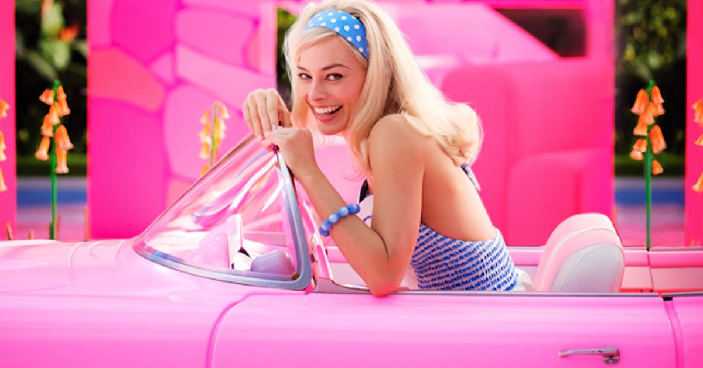
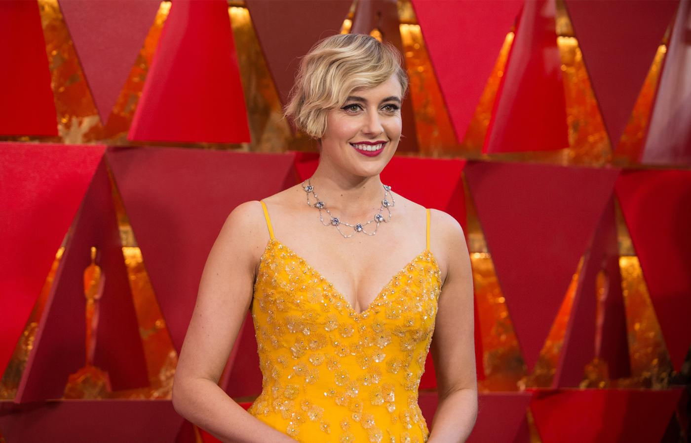
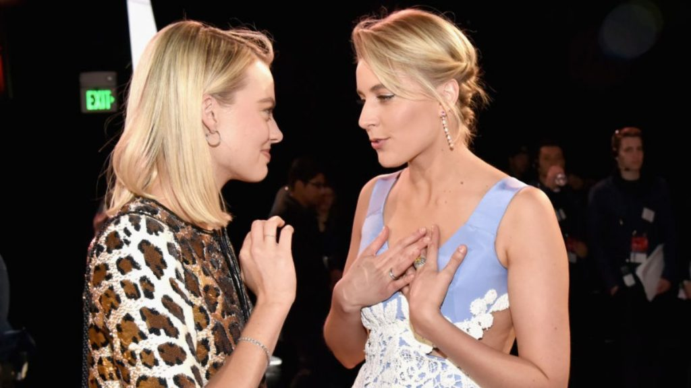

Informações
Barbie é um futuro filme americano de comédia romântica baseado na linha de brinquedos Barbie da Mattel. O filme é dirigido por Greta Gerwig a partir de um roteiro coescrito com Noah Baumbach, sendo o primeiro filme em live-action baseado na boneca depois de uma série de filmes de animação diretos para DVD e séries de televisão. Margot Robbie interpreta a personagem-título do filme, que tem Ryan Gosling, America Ferrera, Simu Liu e Kate McKinnon em papéis coadjuvantes. O desenvolvimento do filme começou originalmente em 2009 na Universal Pictures e depois para a Sony Pictures. Após várias mudanças de escritores e a escolha de duas atrizes diferentes para interpretar o personagem-título, o contrato com a Sony expirou e os direitos foram transferidos para a Warner Bros. Pictures. Robbie foi escalada em 2019 e também atua como produtora pela LuckyChap Entertainment ao lado da Mattel Films e da Heyday Films. Gerwig foi confirmada como diretora e coroteirista com Baumbach em 2021. As filmagens começaram em março de 2022 no Warner Bros. Studios, Leavesden, na Inglaterra. Barbie está programado para ser lançado nos Estados Unidos em 21 de julho de 2023, pela Warner Bros. Pictures.
Diretora
Greta Gerwig é uma atriz, diretora, produtora e roteirista americana. Ela colaborou com Noah Baumbach em vários filmes, incluindo Greenberg (2010) e Frances Ha (2012), pelo qual foi indicada ao Globo de Ouro, e Mistress America (2015). Em 2017, Gerwig escreveu e fez sua estreia solo na direção com o aclamado filme de comédia e drama Lady Bird, que ganhou o prêmio de Melhor Filme (Musical ou Comédia) no 75º Globo de Ouro. Gerwig se tornou a quinta mulher da história a ser indicada na categoria de Melhor Direção no Oscar. Em 2019, com o lançamento de Adoráveis Mulheres, foi indicada à categoria de Melhor Roteiro Adaptado.
